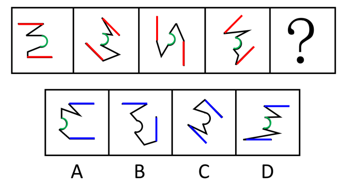
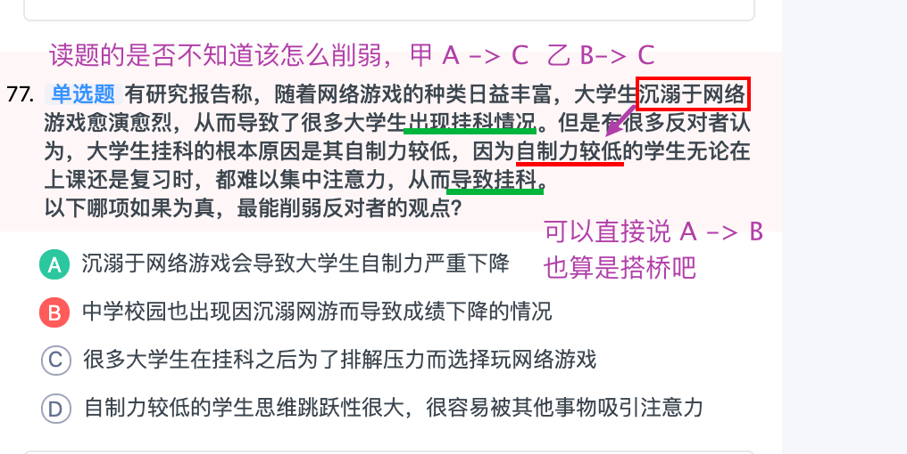
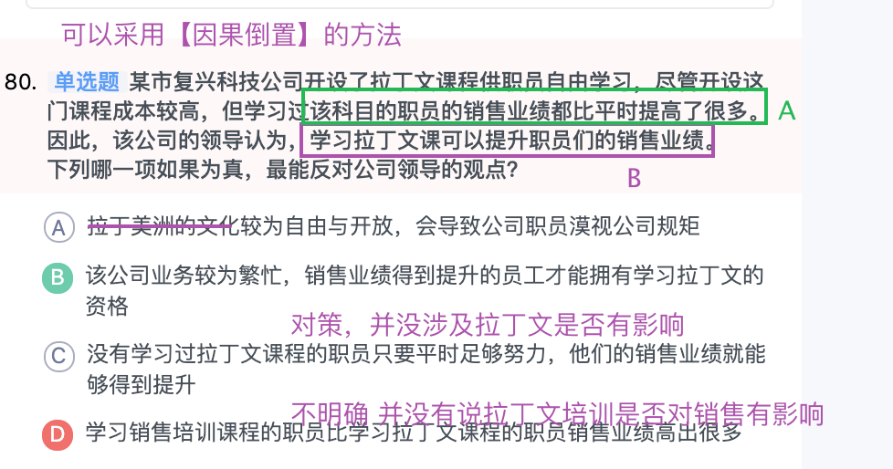
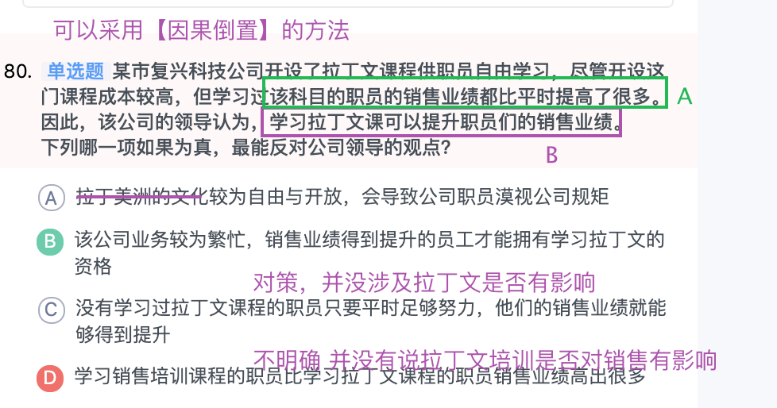

业精于勤，荒于嬉。 （唐·韩愈《进学解》）
业精于勤，荒于嬉。 （唐·韩愈《进学解》）
二十五季复盘
整体总结
- 言语理解
- 第一道题看懵后，卡了好久
- 开考，不会就跳过
- 资料分析
- 相比上次，可以列出公式，计算；
- 错误了很多❌
- 速度更不上，找不到数据。
- 判断推理
- 图形推理，很多不会
- 逻辑推理，根本不想看，还费时间
- 数量关系
- 全蒙，没有时间了。
- 即便有时间，估计公式也忘完了，上周只顾着前三项了
- 常识
- 没学，基本全靠蒙。
预计还有不到两个月的时间
- 前三项目综合联系，积累重点，刷 正常、难一点的题
- 申论必须要开始着手了
- 需要花费十个小时去整理常识，不能放弃！
言语理解
积累
- 空泛
- 空洞
- 空乏
- 空廓
- 裹挟
- 觊觎
- 凝练
- 纾解
- 消弭
- 逐鹿
- 空泛：
- 形容词：（文章、讲话）没有具体内容的泛泛之论；
- 空洞：
- 名词：
- 形容词：比喻言论和文章没有实际内容。空虚而无内涵
- 空乏：
- 形容词；空旷寥廓。
- 空廓：
- 形容词；空旷寥廓。
- 裹挟
- 被动的卷入。“裹挟”侧重于挟持，“裹胁”侧重于胁迫
- 把别的东西卷入，使随着移动
- 把人卷进去，迫使其采取某种态度
- 觊觎
- 贬义词
- 非分的希望或企图
- 凝练
- 形容词
- 指文章内容紧凑，文笔简练。
- 「文章内容很好，但写得还不够 凝练」
- 纾解 shū jiě
- 缓解了但还需要继续
- 消弭 xiāo mǐ
- 清除、消除某些不好的事情
- 逐鹿
- 比喻群雄并起，争夺天下，体现出竞争、比赛之意
- 急功近利
- 好高骛远
- 投机取巧
- 故弄玄虚
- 习焉不察
- 莫衷一是
- 急功近利
- 急于求成，贪图眼前的利益、成效
- 制定目标过于急切、脱离实际的意思
- 好高骛远
- 脱离实际的追求不可能实现的过高、多远的目标
- 投机取巧
- 用不正当的手段谋划私利
- 故弄玄虚
- 故意玩弄花招，迷惑人、欺骗人
- 侧重欺骗
- 习焉不察
- 经常接触某种事物，反而觉察不到其中存在的问题，强调细节的不起眼
- 莫衷一是
- 形容意见分歧，没有一致的看法。
考题
看了几个错题，主要原因并非是词汇不了解，而是根本原因
- 没有找到关键词
- 没找到对应关系
- 成语、词汇填空找关键字、对应关系
“做正确的事”，要求我们的目标制定要符合实际情况、符合客观规律、符合科学精神，不 【 】，不脱离实际，只有这样才能做对事；“正确地做事”，要求我们选准措施。效果好不好，很大程度上取决于措施是不是有效，若措施配套不当，再正确的事也可能事倍功半，甚至 【 】 。
依次填入画横线部分最恰当的一项是：
A 急功近利 雪上加霜
B 好高骛远 适得其反
C 投机取巧 事与愿违
D 故弄玄虚 功败垂成
解析
第一道题就卡住了，原因无法区分表述：实际
- 第一空，脱离实际的近义词，并列关系，ABC，都可以
- 第二空，递进关系，
- 事与愿违侧重不相同，程度超过了 事倍功半
- 雪上加霜侧重外因加重程度
现实题材电视剧的创作命题，是在 【 】 的影像细节中揭示生活本真和生命理想，挖掘日常生活的诗意。这意味着，创作者要在 【 】 观众审美定势的基础上，明确价值导向，深拓艺术生命的底蕴。
依次填入画横线部分最恰当的一项是：
A 潜移默化 认同
B 司空见惯 秉承
C 无所不在 重塑
D 习焉不察 尊重
解析
思考方向
- 第一空形容 影响细节；
- 潜移默化，性格、思量不经意间被影响、被改变
- 司空见惯，经常见到，不足为奇
- 无所不在，到处都是，
- 习焉不察，经常接触，反而觉察不到其中存在的问题，强调细节不起眼。
- 第二空，审美定势
- 尊重：尊敬、重视
- 秉承：秉承某种旨意、按指示办事。
“不以规矩，不能成方圆”，这句话告诉我们规矩既有 【】 ，也有规范性。作为中华文化重要载体和表现形式的汉字，在漫长的发展演化过程中，以规范的形式书写是各个历史阶段的时代共识。而世界上历史悠久的自源文字体系，唯有汉字 【】 ，其他文字几乎都遭遇了“断流”，这与汉字的“形神兼备”是分不开的。
依次填入画横线部分最恰当的一项是：
A 实用性 源远流长
B 工具性 经久不衰
C 局限性 历久弥新
D 灵活性 涅槃重生
解析
- 从第二空入手，
- 与断流相反
- 源远流长：历史悠久，
- 经久不衰：是精神饱满的状态，身体健壮的外表，形容某事或某人经历很长时间仍旧保持较高的旺盛状态
- 历久弥新”指经历长久的时间而更加鲜活，更加有活力，更显价值，与“断流”意思相反
- 涅槃重生：侧重重生；
近年来在生物医学领域取得了一个又一个的进展，如器官移植、试管婴儿、克隆生命，人类基因组图谱完成等，使得生物医学研究被罩上了无坚不摧的绚丽光环。但随着时间的推移，【】 。到目前为止，它既没有彻底揭示疾病发生发展的奥秘，又没能为根治疾病提供有效的帮助。一百年前不能治的疾病，现在同样不能治。而且随着工业化的进程和生态环境的改变，旧的疾病还没获得有效治疗，新的疾病又不断出现，对此生物医学研究更显得力不从心。
填入画横线部分最恰当的一项是：
A 生物医学研究的热度却呈现出了衰退的趋势
B 新的问题层出不穷，超出了生物医学的能力范畴
C 人们逐渐发现生物医学研究并非想象的那样无所不能
D 生物医学研究所取得的实际成果寥寥无几
解析
主题词：生物医学研究
对应词：绚丽光环。但。。。
找一个和他相反的就行。无法排除 C D， C项目对应 取得了一个又一个的进展
针对“互联网食品”的潜在风险，科学监管乃是当务之急。众所周知，监管的本质是对市场的补充而非替代，真正了解市场的是市场主体本身而非政府监管部门。因此监管部门要主动强化安全监管，更为重要的是，让网络平台承担更多社会责任。有的地方充分运用大数据技术，利用网络交易和支付的信息留痕特征，形成网络平台食品全链条可记录、可追溯、可查询体系，为“互联网食品安全”提供了新的可能路径。
根据这段文字，作者意在说明：
A 科学监管是有效维护“互联网食品安全”的必然选择
B 强化“互联网食品”安全需监管部门和企业双管齐下
C “互联网食品”安全监管需充分发挥网络平台的作用
D 有迹可循的监管体系是“互联网食品安全”的新路径
解析
因此监管部门要主动强化安全监管，更为重要的是，让网络平台承担更多社会责任
移动政务在提升政府工作效率的同时，必然推动政府工作作风的改变。新技术应用的陌生化效果消除了以往民众与具体部门和工作人员打交道时“门难进，脸难看，事难办”的麻烦，办事程序更加简化透明，民众可即时查询相关信息，而数据整合分析也可提高政府决策的科学性。这在很大程度上减少了权力寻租空间，也必将使政府部门的形象有较大改观。但新技术应用所带来的改变如果只是外在的强制性因素，而没有内化为政府部门提升服务意识的理念，那么，要真正建立服务型政府恐怕还路途漫长。
这段文字意在说明：
C 新技术契机下政府更需提升服务意识
D 我国建立服务型政府仍面临诸多困难
落实对个人信息的保护，需要社会不同主体发力，其中，银行加强内部管理十分重要。随着银行联网系统的普遍使用，银行功能日益强大。这同时意味着银行内部能够获取用户信息的端口增多了，有内部授权的银行员工都可以查询相关信息。若银行内部缺乏职业伦理、法律素养的培训，银行就不再是铁桶一块，若加之内部监管机制失灵，出了问题无法追究溯源，用户隐私保护机制就会彻底失灵，从而为用户信息泄露埋下重要隐患。
这段文字意在强调：
B 保护个人信息，银行需建立有效的内部监管机制
D 银行内部管理缺陷不利于保护用户的个人信息
资料分析
判断推理
6条直线与1条曲线构成，优先观察首尾直线的关系

数量关系


二十三季复盘
- 做题顺序
- 言语->逻辑判断->常识->资料分析->数量关系
- 时间问题
- 粉笔推荐顺序是
- 言语理解（32 分钟）➜逻辑判断（35 分钟）➜资料分析（30 分钟）➜常识（8 分钟）➜数量关系（10 分钟）➜涂答题卡（5 分钟）
- 中公推荐顺序是
- 常识（5 分钟）➜言语理解（35 分钟）➜逻辑判断（35 分钟）➜资料分析（20-25 分钟）➜数量关系（10 分钟）➜涂答题卡
- 粉笔推荐顺序是
接下来需要按时间做题、按步骤做题
言语理解
成语、词语填空
很烦的一部分
中心理解题
数量关系
 
